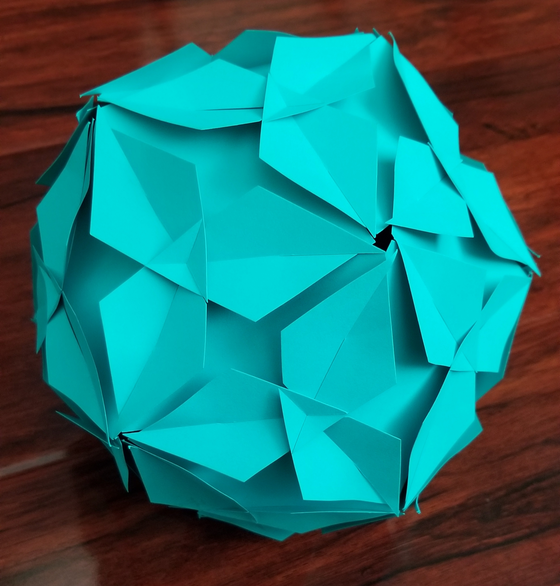
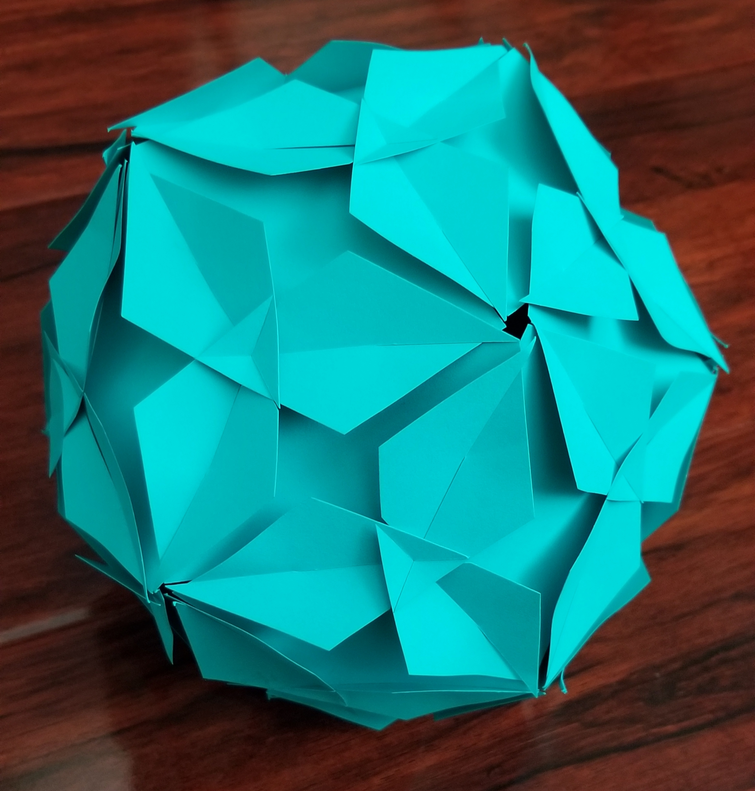
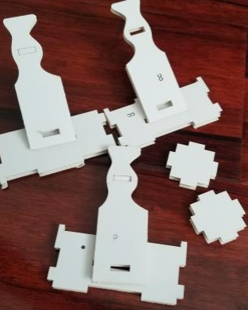
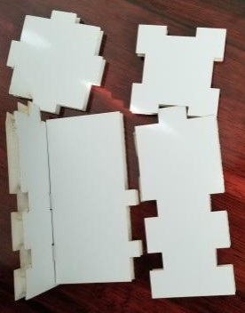
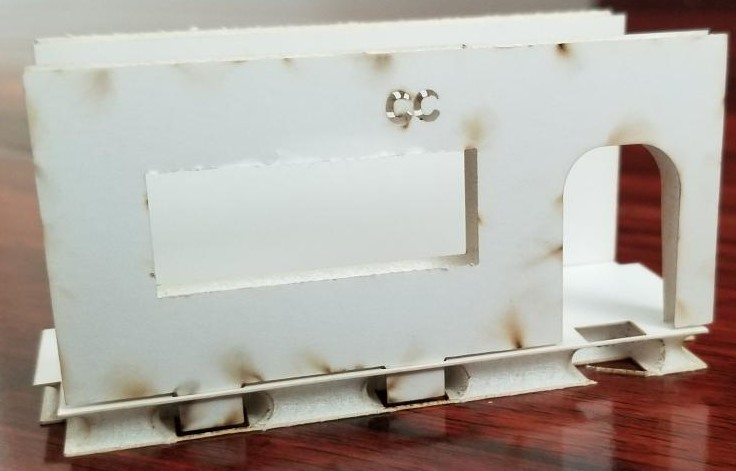
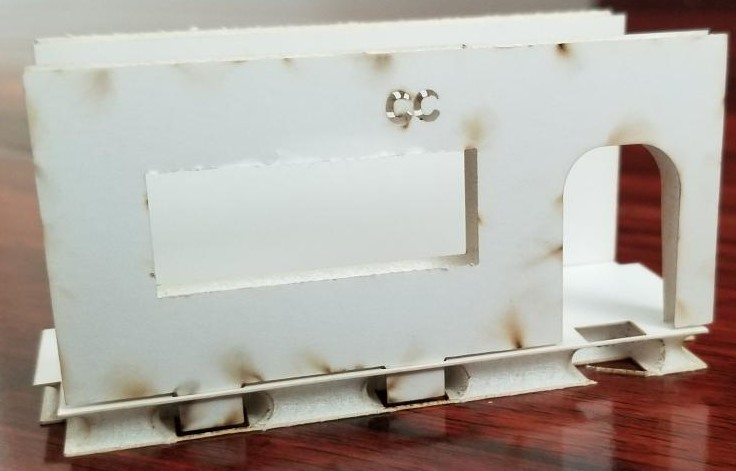

.jpg)
.jpg)
 


.jpg)

Some pros of our Fasteners are the stability and guarantee of security. If all slots are consistent in size, then most pieces are able to fasten with one another allowing for more variety. Some cons of the fastener design could be that it only allows for one way of putting objects on: being that whatever is tabbed through will only be standing upwards. In terms of overall design, this could result in less options of modularity.

The failed fasteners were incorrectly measured and some tabs did not stick or stand on top another as one thought. These designs were discarded and redone as tabs and slots.
 In the sucessful pieces, slots were the all around go to that worked consistently. Pieces stayed snug with one another and were not wobbly.
 

The successful fasteners of Trial 1 were kept. However, 2 important major changes we made in this trial were: (1) we decided to add slots to a majority of the pieces to allow for more mobility and modularity and (2) making the inside of the slots slightly more narrow, to allow for a more secrue fit when locked onto another piece.
For example, in my pieces and Erika's, many of our pieces have various slots that allow them to slide in or onto any other piece if need be. This would allow more ease with building, especially upwards.
As you can see, I feel the combination of slots and tabs, allow for much more variability and ease. Slots allowed easy building, while tabs allowed for creating a stronger more structured foundation to build on.
Our shcema is just to show some possible ideas of where certain tabs and slots go, to give our audience a general idea of how they could begin building and generally how the pieces would work. However, even more results can be done with the pieces than the options shown in our shcema!
As an individual, the way I approached this project is just simply making sure I did my part as well as communicate my work to my group mates so everyone would be on the same page. I find importance in making sure people are in line with what they need to do, and therefore, it makes my work easier so I know exactly what everyone needs and is doing for me to work and contribute with. Erika and I were the root of the shapes of pieces, and making sure the fasteners were consistent amongst all the group. We also focused on the schema, the instructions of our design, and any additional materials needed for our pieces. Erika and I painted all pieces as necessary while David was in charge of editing the video and making his piece and Adrian made his pieces.
One major success I found was when we decided to make more slots in our 2nd trial. This really helped us create more variability with how the structure would come out in terms of overall shape. This helped to reduce too much of a boxy structure and to allow the building to be done wherever the user pleases.
My contributions for this project consisted of coming up with the overall idea of the project. I decided it'd be fun to do something closely related to architecture, and try to mimick modular architecture. Although the idea did not come out 100% how I imagined, I still greatly enjoyed the end result. I was in collaboration mostly with Erika throughout this whole project, by contributing to the schema, supplies paint, foamboard (that we did end up not using), and paint half of our group's pieces, including my 56 pieces I created.
The initial communication between the group felt very difficult. Some members participated, communicated and worked on their portions of the project more than others. Overall, communication was the strongest factor that diminished our end result. I feel if things were done more timely and communicated more thoroughly, results could be even better, but we somehow managed and that's totally okay! I do wish some group members put more of their own design on their pieces, but overall, things did end up coming out well.